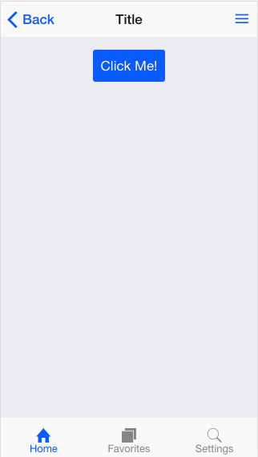
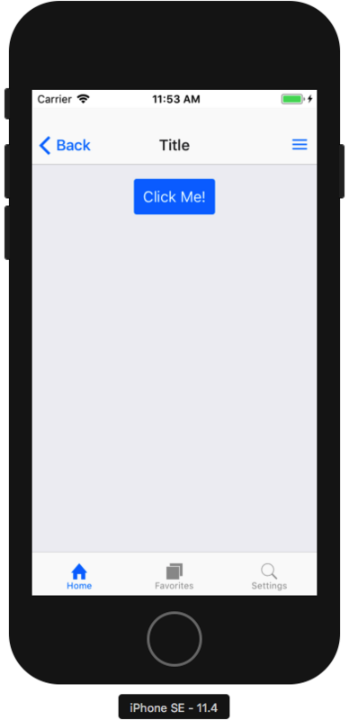

ngx-onsenui を使って Angular6 + OnsenUI + Cordova なプロジェクトを立ち上げてみる
HTML・CSS・JavaScript でスマホ向けアプリを作成することを「ハイブリッドアプリ」と呼ぶが、そんなハイブリッドアプリで Android や iOS のネイティブっぽい UI を実現してくれる、OnsenUI というフレームワークがある。
「Monaca」を展開する、「アシアル株式会社」という日本の企業が作っている、国産のフレームワークなので、ドキュメント群も日本語が存在し、大変分かりやすい。
OnsenUI 本体はピュアな CSS として利用できる他、ngx-onsenui というパッケージを利用すると、Angular アプリに最適化された各種コンポーネントが利用できる。
今回は Angular6 系のアプリをベースに、ngx-onsenui を使って OnsenUI を組み込み、それを Cordova でビルドして iOS アプリ化してみようと思う。
目次
- 環境情報
- Angular アプリの作成
- ngx-onsenui のインストール
- OnsenUI コンポーネントを使ってみる
- スマホアプリ風の UI を実現する
- Cordova アプリ化する
- iOS シミュレータで起動する
- 以上
環境情報
検証した OS は MacOS High Sierra。Angular CLI v6.1.5 を利用してアプリの雛形を作ろうと思うので、Node.js・npm は予め用意しておこう。
$ node -v
v10.7.0
$ npm -v
6.1.0
$ ng -v
Angular CLI: 6.1.5
Node: 10.7.0
OS: darwin x64
Angular:
...
Package Version
------------------------------------------------------
@angular-devkit/architect 0.7.5
@angular-devkit/core 0.7.5
@angular-devkit/schematics 0.7.5
@schematics/angular 0.7.5
@schematics/update 0.7.5
rxjs 6.2.2
typescript 2.9.2
最後に iOS シミュレータを利用して Angular + OnsenUI + Cordova 製アプリを動作させたいので、Xcode や iOS シミュレータは予めインストールしておくこと。
Angular アプリの作成
まずは Angular CLI でアプリの雛形を作る。
$ ng new ng-cordova-onsen --routing --style=scss
$ cd ng-cordova-onsen
ngx-onsenui のインストール
次に、onsenui 本体と、それを Angular にバインディングする ngx-onsenui をインストールする。
$ npm install -S onsenui ngx-onsenui
インストール後、AppModule にて OnsenModule をインポートし、CUSTOM_ELEMENTS_SCHEMA を設定する。
import { BrowserModule } from '@angular/platform-browser';
import { NgModule, CUSTOM_ELEMENTS_SCHEMA } from '@angular/core';
import { OnsenModule } from 'ngx-onsenui';
import { AppRoutingModule } from './app-routing.module';
import { AppComponent } from './app.component';
@NgModule({
declarations: [
AppComponent
],
imports: [
BrowserModule,
OnsenModule, // ← 追加
AppRoutingModule
],
providers: [
],
bootstrap: [
AppComponent
],
schemas: [
CUSTOM_ELEMENTS_SCHEMA // ← 追加
]
})
export class AppModule { }
最後に、styles.scss にて OnsenUI のスタイルシートファイルをインポートする。
// ./src/styles.scss
@import '../node_modules/onsenui/css/onsenui.css';
@import '../node_modules/onsenui/css/onsen-css-components.css';
OnsenUI コンポーネントを使ってみる
ココまでで OnsenUI のインストールは完了したので、試しに ons-button コンポーネントを使ってみよう。
app.component.html に以下のように記述し、$ npm start でブラウザを起動すると、青地に白文字で「Click!」と書かれたボタンが配置されているはずだ。
<ons-button>Click!</ons-button>
クリック時のイベントを設定するなら、<ons-button (click)="doSomething()"> のように記述し、TypeScript ファイルの方に doSomething() メソッドを実装すれば良い。
スマホアプリ風の UI を実現する
今回は OnsenUI をお試しで使うだけなので、ホントにガワだけ実装してみる。app.component.html を次のように作り変えよう。
<ons-page>
<!-- 上部ツールバー -->
<ons-toolbar>
<div class="left">
<ons-back-button>Back</ons-back-button>
</div>
<div class="center">Title</div>
<div class="right">
<ons-toolbar-button>
<ons-icon icon="ion-navicon"></ons-icon>
</ons-toolbar-button>
</div>
</ons-toolbar>
<!-- 下部タブバー -->
<ons-tabbar>
<div class="tabbar">
<ons-tab label="Home" icon="ion-home" active></ons-tab>
<ons-tab label="Favorites" icon="ion-ios-browsers"></ons-tab>
<ons-tab label="Settings" icon="ion-ios-search"></ons-tab>
</div>
</ons-tabbar>
<!-- 背景色レイヤ -->
<div class="background"></div>
<!-- コンテンツ -->
<div class="content">
<!-- 通常はルータで子ページを表示する -->
<router-outlet></router-outlet>
<!-- 今回は試しにボタンだけベタで実装した -->
<p style="text-align: center;">
<ons-button>Click Me!</ons-button>
</p>
</div>
</ons-page>
こんな風に作り、Chrome ブラウザの「レスポンシブデザインモード」などで見てみると、次のように表示される。

かなりスマホネイティブっぽい見た目になったが、全て CSS で実装されている。素晴らしい！
Cordova アプリ化する
最後は、Cordova を使って iOS アプリとしてビルドして、iOS シミュレータで動かしてみよう。
Cordova のグローバルインストール
Cordova 本体はグローバルインストールする必要がある。現時点では cordova@8.0.0 が最新版なので、次のようにインストールする。
$ npm install -g cordova
雛形ファイルのマージ
次に、Cordova アプリの雛形ファイルを手に入れるため、コレまで作業していた ng-cordova-onsen ディレクトリとは別のところに、同名で Cordova アプリを立ち上げてみる。
# 別の一時作業用ディレクトリを作ってそこに移動する
$ mkdir temp-cordova && cd $_
# Cordova プロジェクトを作る
$ cordova create ng-cordova-onsen com.example ng-cordova-onsen
Creating a new cordova project.
こうして生成された ng-cordova-onsen/ ディレクトリ配下から、hooks/・res/・config.xml をコピーして、先程まで作業していた Angular プロジェクトの方にコピーする。
そしたら、Angular プロジェクト側の ng-cordova-onsen/src/index.html と、Cordova プロジェクト側の ng-cordova-onsen/www/index.html を開く。Cordova プロジェクト側の index.html に記載されているコードの一部を、Angular プロジェクト側に移植する。次のような src/index.html に仕上げる。
<!DOCTYPE html>
<html lang="ja">
<head>
<meta charset="UTF-8">
<title>NgCordovaOnsen</title>
<base href="./">
<meta http-equiv="Content-Security-Policy" content="default-src 'self' data: gap: https://ssl.gstatic.com 'unsafe-eval'; style-src 'self' 'unsafe-inline'; media-src *; img-src 'self' data: content:;">
<meta name="format-detection" content="telephone=no">
<meta name="msapplication-tap-highlight" content="no">
<meta name="viewport" content="user-scalable=no, initial-scale=1, maximum-scale=1, minimum-scale=1, width=device-width">
<link rel="icon" type="image/x-icon" href="favicon.ico">
<script src="cordova.js"></script>
</head>
<body>
<app-root></app-root>
</body>
</html>
いくつかの meta 要素と、cordova.js を読み込むよう変更を入れている。
ココまでできたら、cordova create コマンドで生成したプロジェクトの方は用済み。削除して良い。
- 参考 : GitHub - Neos21/angular-cordova: Angular + Cordova iOS App Boilerplate … 拙作の Angular4 + Cordova ボイラープレート。今回やっていることとほぼ変わらない。
- 参考 : GitHub - NavCore/ngCordova: Angular 4 + Cordova Boilerplate … コチラも同様のボイラープレート。参考までに。
Angular プロジェクトの加工
続いて、Angular プロジェクト直下の angular.json を編集する。
"architect": {
"build": {
"builder": "@angular-devkit/build-angular:browser",
"options": {
"outputPath": "dist/ng-cordova-onsen",
↑ コレが編集前の抜粋。この outputPath を、www に変更する。
"outputPath": "www",
コレで、npm run build 実行時に成果物ファイルが www/ ディレクトリに出力されるようになる。.gitignore に /www も追加しておこう。www ディレクトリはとりあえず存在させておかないと cordova コマンドが動作してくれないので、初回のみは ./www/.gitkeep を作成し、このファイルだけコミットしておくと良いだろう。
次に以下のコマンドを実行し、./platforms/ と ./plugins/ ディレクトリを生成させ、package.json に Cordova 関連のパッケージを追記させる。
$ cordova platform add ios
最後に、package.json に build:ios コマンドを追加しよう。
"scripts": {
"build:ios": "ng build --base-href . && cordova emulate ios --target=\"iPhone-SE, 11.4\"",
// 以下略…
ココで記述した cordova emulate コマンドのターゲットは、次のコマンドで確認できる。
$ cordova emulate ios --list
このコマンドで、そのマシンにインストールされている iOS シミュレータのデバイスとバージョンが分かるので、それを指定する。
- 参考 : iphone - Cordova: start specific iOS emulator image - Stack Overflow
- 参考 : CordovaでiOS simulatorを指定する
package.json 全体としては次のようになるはずだ。
{
"name": "ng-cordova-onsen",
"version": "0.0.0",
"scripts": {
"ng": "ng",
"start": "ng serve",
"build": "ng build",
"build:ios": "ng build --base-href . && cordova emulate ios --target=\"iPhone-SE, 11.4\"",
"test": "ng test",
"lint": "ng lint",
"e2e": "ng e2e"
},
"private": true,
"dependencies": {
"@angular/animations": "^6.1.0",
"@angular/common": "^6.1.0",
"@angular/compiler": "^6.1.0",
"@angular/core": "^6.1.0",
"@angular/forms": "^6.1.0",
"@angular/http": "^6.1.0",
"@angular/platform-browser": "^6.1.0",
"@angular/platform-browser-dynamic": "^6.1.0",
"@angular/router": "^6.1.0",
"cordova-ios": "4.5.5",
"cordova-plugin-whitelist": "1.3.3",
"core-js": "^2.5.4",
"ngx-onsenui": "4.2.2",
"onsenui": "2.10.4",
"rxjs": "^6.0.0",
"zone.js": "~0.8.26"
},
"devDependencies": {
"@angular-devkit/build-angular": "~0.7.0",
"@angular/cli": "~6.1.5",
"@angular/compiler-cli": "^6.1.0",
"@angular/language-service": "^6.1.0",
"@types/jasmine": "~2.8.6",
"@types/jasminewd2": "~2.0.3",
"@types/node": "~8.9.4",
"codelyzer": "~4.2.1",
"jasmine-core": "~2.99.1",
"jasmine-spec-reporter": "~4.2.1",
"karma": "~1.7.1",
"karma-chrome-launcher": "~2.2.0",
"karma-coverage-istanbul-reporter": "~2.0.0",
"karma-jasmine": "~1.1.1",
"karma-jasmine-html-reporter": "^0.2.2",
"protractor": "~5.4.0",
"ts-node": "~5.0.1",
"tslint": "~5.9.1",
"typescript": "~2.7.2"
},
"cordova": {
"plugins": {
"cordova-plugin-whitelist": {}
},
"platforms": [
"ios"
]
}
}
iOS シミュレータで起動する
実際に $ npm run build:ios コマンドを実行してみると、Angular ビルド後、./www/ ディレクトリに生成された成果物ファイルを使用して Cordova ビルドが行われ、その後 iPhoseSE のシミュレータが起動する。

実際に iOS 上で動作させると、ホントにネイティブアプリみたいだ。素晴らしい！！
以上
OnsenUI 本体は単純なカスタムエレメントと CSS のフレームワークだし、ngx-onsenui もシンプルな Angular コンポーネントなので、自然に使えるようになるだろう。
これで今までよりネイティブに近い UI を実現できるようになったので、ガシガシ使っていこうと思う。